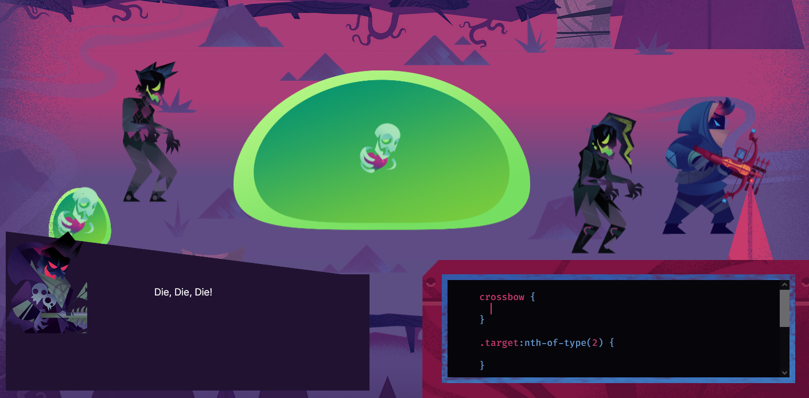
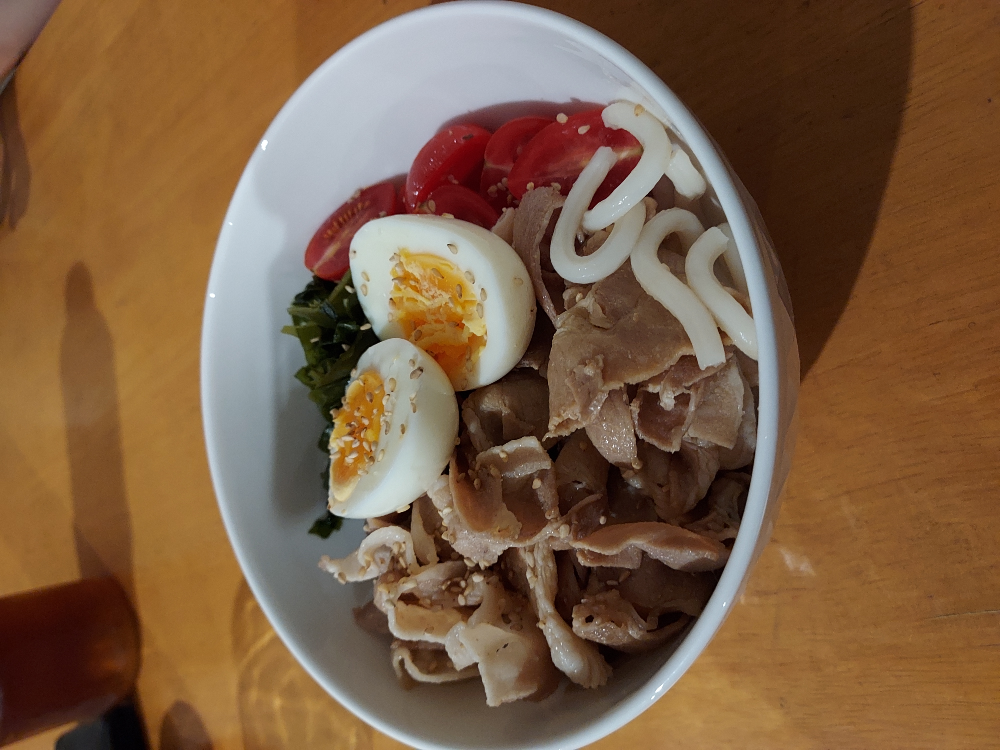

Learning through games
Published: 10/11/2021
Some programming concepts are quite difficult to learn and the code syntax can take a very long time to memorize. It's not uncommon for coders to refer to cheat-sheets for a long time after learning a new skill. This is where coding games can come in to save the day. An engaging game that mixes task and challenge types and keeps you thinking can really make the necessary code repetition enjoyable while you practice.
This week, I had fun getting to grips with Flexbox thanks to the amazing game Flexbox Zombies.
The good about Flexbox Zombies
- An entertaining story over 12 chapters
- Stylish and atmospheric comic art and animation
- Starts off easy with the basics of Flexbox commands
- Each chapter introduces a new comand and its relevant syntax
- Makes repetitive practice of commands fun!
- The final chapter challenges you to defeat the evil villain without help or clues! How much did you remember?
The bad about Flexbox Zombies
- The last three levels do seem to have some errors.Or maybe thats just me
- If you don't get it when it's free, it'll cost you $179
Visit the Flexbox Zombies and check it out!
When the weather gets hot, the hot noodles get... cold
Published: 6/11/2021
Saori has been craving cold udon noodles... cold soba noodles... cold ramen noodles...
Nah... just kidding about the last one!
But seriously, Japanese cuisine has some delicious cold noodle dishes available in the summer. They're actually easy to source ingredients for here in Australia too and easy to prepare!
Cold Udon Ingredients
- Udon noodles 1 small packet per person
- Thinly sliced beef or pork from an Asian supermarket (optional ingredient)
- Wakame seaweed from an Asian supermarket
- Cherry or Roma tomatoes halved
- Egg 1 for each person, hard-boiled or half-boiled and cut in hales
- Japanese white dashi a type of broth
- Toasted sesame seeds sprinkled on top before serving